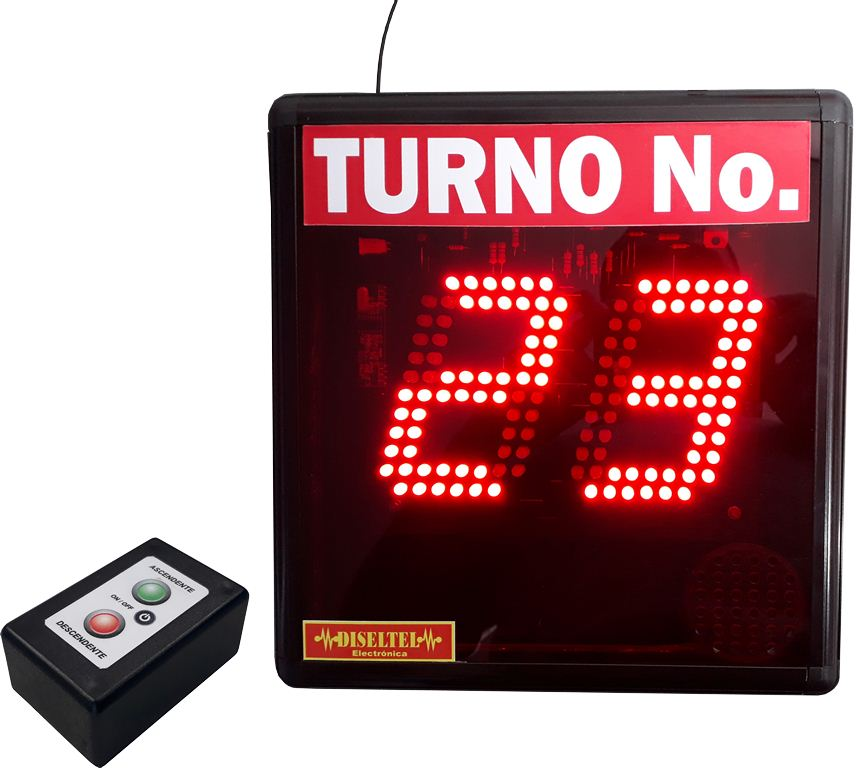

Integrantes
Camilo Otálora
Estudiante de Ingeniería Informática
Felipe Herrera
Estudiante de Ingeniería Informática

Ricardo Ávila
Estudiante de Ingeniería Informática
Después de una cita médica, el médico usualmente nos receta algunos medicamentos que ayudarán a mejorarnos. Sin embargo cuando vamos a reclamar estos medicamentos se puede hacer algo bastante tedioso pues, múltiples factores afectan el adecuado funcionamiento para la entrega de los medicamentos, estos pueden ser: muchas filas por una alta demanda en los medicamentos, falta de stock de algunos medicamentos, mala logística por parte de la EPS para la entrega eficiente de medicamentos, entre otros. Son cosas que perjudican a las personas; tardando de 1h-3h en poder reclamar un simple medicamento que a veces es de vital importancia y es necesario para la vida de una persona
IntegrantesEstudiante de Ingeniería Informática
Estudiante de Ingeniería Informática
Estudiante de Ingeniería Informática
Datos demográficos
Perfil general:
Géneros: Hombres y mujeres
Rango de edad: 18+
Región donde viven: Cundinamarca
Nivel educativo: Sin educación hasta posgrado
Ocupaciones: Campesinos, trabajadores, madres,etc.
Las personas sufren de distintos tipos de enfermedades, por lo que se necesitan medicamentos para poder tratarlas. Madres cabezas de hogares que no tienen tiempo para poder reclamar medicamentos para sus hijos, Algunas personas son dependientes de los medicamentos y los necesitan para poder vivir, etc.
Varias de estas personas son emocionales, extrovertidas; su motivación es poder sacar adelante a su familia, lograr sanar a un ser querido por medio de los medicamentos (Que tenga una mejora), sentirse mejor por fuertes dolores generados por la edad y desgaste del cuerpo, llegar a la vejez y sentirse bien, sin algún dolor
¿Cual es su nombre?
¿Ha experimentado demoras en la entrega de medicamentos?
¿Cuánto ha sido el tiempo que ha tardado en la entrega de medicamentos?
¿Le ha pasado que alguna vez ha ido por un medicamento, esperado; y no logra conseguir ese medicamento?
¿ Cómo le parece la logística para la entrega de medicamentos ?
¿ Crees que haya alguna solución para las largas filas?
Profesionales de la salud; Médicos, farmacéuticos.
Especialistas en administración de salud
Investigadores en Políticas de Salud
Médicos: Con conocimiento en prescripción de medicamentos y tratamiento de enfermedades.
Farmacéuticos: Especializados en medicamentos, su composición, interacciones y efectos.
Enfermeros: Con experiencia en el manejo de pacientes y la administración de medicamentos.
Administradores de Salud: Con experiencia en la gestión y mejora de sistemas de atención médica.
Gerentes de Clínicas y Hospitales: Expertos en la optimización de procesos y recursos en entornos de atención médica.
Epidemiólogos: Expertos en estudios de enfermedades y su impacto en la población.
Convertirse en un experto en la problemática de largas filas para la obtención de medicamentos formulados por las EPS requiere una combinación de conocimientos, habilidades y experiencia en áreas relevantes.
Conocimiento Profundo del Sistema de Salud: Comprender en detalle cómo funcionan las EPS, las políticas de salud, las regulaciones y los procesos de distribución de medicamentos.
Experiencia Clínica o Farmacéutica: Haber trabajado directamente en la atención médica, la prescripción de medicamentos o la gestión de recetas para comprender los desafíos desde una perspectiva práctica.
Experiencia en Administración de Servicios de Salud: Haber gestionado clínicas, hospitales o servicios de atención médica para comprender los aspectos operativos y logísticos de la distribución de medicamentos.
La elección de estos expertos se basa en su capacidad colectiva para proporcionar soluciones bien informadas, multidisciplinarias e innovadoras que aborden todos los aspectos de la problemática de largas filas para la obtención de medicamentos formulados por las EPS.
¿Podría compartir su experiencia y antecedentes en su campo de especialización en relación con el sistema de salud y la distribución de medicamentos?
¿Cuál es su comprensión de las principales causas detrás de las largas filas para la obtención de medicamentos formulados por las EPS?
¿Qué desafíos específicos identifica en el proceso de obtención y distribución de medicamentos dentro del sistema de salud actual?
Dada su experiencia en [campo del experto], ¿cómo cree que su área de especialización puede contribuir a la solución de esta problemática?
Lugares de entrega de medicamentos dados por la EPS
En estos lugares se desarrolla toda la problemática pues, aquí es donde se generan los largos tiempos de espera para la reclamación de medicamentos por distintos factores como por ejemplo: la gran cantidad de personas reclamando medicamentos, falta de medicamentos, falta de personal para la entrega, etc.
En estos lugares se presentan muchas menos filas, reduciendo el tiempo de espera para la reclamación de algo o un servicio pues, en el primer caso las personas pueden tomar su producto, pagar e irse. sin tener que esperar. En la otra parte existe un orden para cada servicio y las personas capacitadas para hacer el proceso.
1. A las personas no les gusta esperar por sus medicamentos, sin embargo no se les ocurre ninguna solución al respecto.
2. Las personas están acostumbradas a disponer de mucho tiempo para gestionar sus medicamentos.
3. Algunos proponen mayor orden para gestionar los medicamentos, no obstante estan dispuestos a esperar.
4. Hay una mala administración por parte de las EPS en la distribución de los medicamentos, pues hacen perder tiempo a los usuarios al no haber disponibilidad en los medicamentos, haciéndolos volver otro día para poder entregarlo.
5. El acceso a la atención médica y a los medicamentos es esencial para el bienestar de las personas y puede inspirar reflexiones sobre cómo mejorar los sistemas y estructuras que lo respaldan.